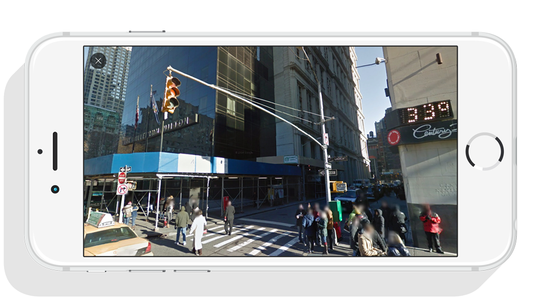

Owlook
Mobile app
Owlook is a mobile app which allows users to discover a city from another point of view and in a playful way.
The app provides users wishing to visit a city to search small owls. Once the user finds a bird, he can catch it and enjoy an aerial panoramic to discover the place where he is. Go on an adventure to discover new cities to catch them all !

